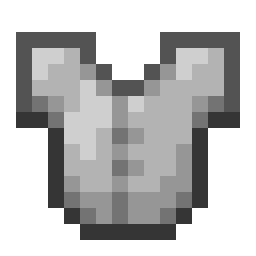
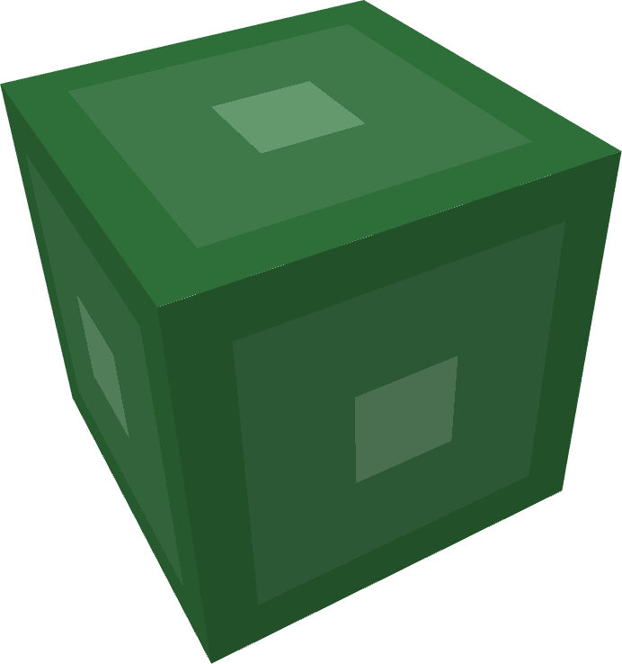

This UNOFFICIAL site shows you how to add any of these customizations into your datapack,
If you're new, follow the order of the page to learn properly.
Although if you've never made a pack before, please use the first one to do so.
/OOOOOO\
|OOO|>OOO|
<---- Youtube Playlist\OOOOOO/
___ _ _ _ _ _
/ __(_) |_| || |_ _| |__
| (_ | | _| __ | || | '_ \ <---- Github (Code)
\___|_|\__|_||_|\_,_|_.__/
All Assets, obviously belonging to Mojang.
Creating A Blank Datapack
Before youeven begin
crafting your imagination into Minecraft, youneed to create the structure for your datapack.
With one command in Minecraft, you can create the pack; this mini-lab
just helps you how to find the folder top open in
VSCode
.+2 Knowledge
+3 Creation Speed
Creating LONE Structures
For creating single structures like ahut, a home, or a castle.
Youcan use this module to learn how to naturally spawn them in the world.
As well as the options for:
spawn position, rates, and generation.
+3 Knowledge
+3 Creation Speed
Creating Structures With Multiple Parts
If you want to create stuff likeVillages
orDungeons
. This module teaches you how to have roads or hallways, houses or rooms all interconnected.All with
rarities and weightings
attached to the spawning of each room.+4 Knowledge
+1 Creation Speed

Custom Lootables & Mob Drops
If you want to havechests or entities
that have rollable loot that changes each time. With vanilla items, orentirely custom items
.<Mythqil>
Little tidbit, if you want to use a
custom loot-table
in a
custom structure
just place it down, don't open it and save.
+2 Knowledge
+3 Creation Speed

Custom Armour
For creating custom armour,with or without custom effects.
This pack focuses on usingleather armour
to utilize vanilla textures instead of a resource pack.An example WITH a resource pack is in the
Github
with a
README.md
file explaining it.+2 Knowledge
+3 Creation Speed
Custom Weapon/Item
If you want acustom sword
, or just a cool 2D talisman item, you can use this module to add it to your datapack.This module will have a resourcepack download linked
+2 Knowledge
+3 Creation Speed
Custom Recipe
For adding custom recipes,for existing items, or new custom items
use this module.Custom recipes are a bit of a lucrative thing in datapacks, it makes
really big files
depending on how customized your item is.
+5 Knowledge
+3 Creation Speed
Custom Food
Relatively simple to implement,custom foods
add a cozy variety to your datapack.Allowing custom effects,
potions or attributes.
+1 Knowledge
+3 Creation Speed

Custom 3D Item
Say you wanted your custom item, to bea 3D model instead
, it takes quite a bit of work; needing the applicationBLOCKBENCH.
Once you get the structure down, it is rather easy to
copy and paste.
+4 Knowledge
+1 Creation Speed
Custom Block Model & Texture
Adding custom blocks, or ratherchanging textures and model
of an existing block. Can be a bit annoying, as it requires a resource pack, but this willguide you and provide the resource pack.
>... GitHub will have resource pack too, and a README.ME explaining it.
+2 Knowledge
+3 Creation Speed
Custom Biomes
Creating custom biomes, withcustom foliage, sky and grass colours; as well as custom trees.
Is actually rather standardized to implement.Infact, certain mods can fully replicate their custom biomes in datapacks;
Incendium
for example.+4 Knowledge
+3 Creation Speed